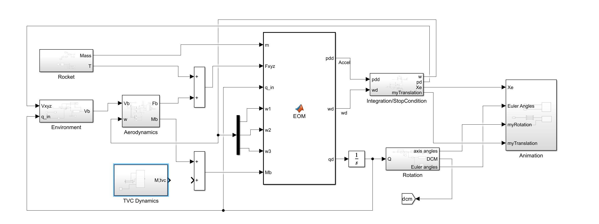
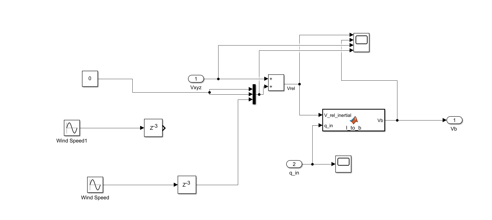
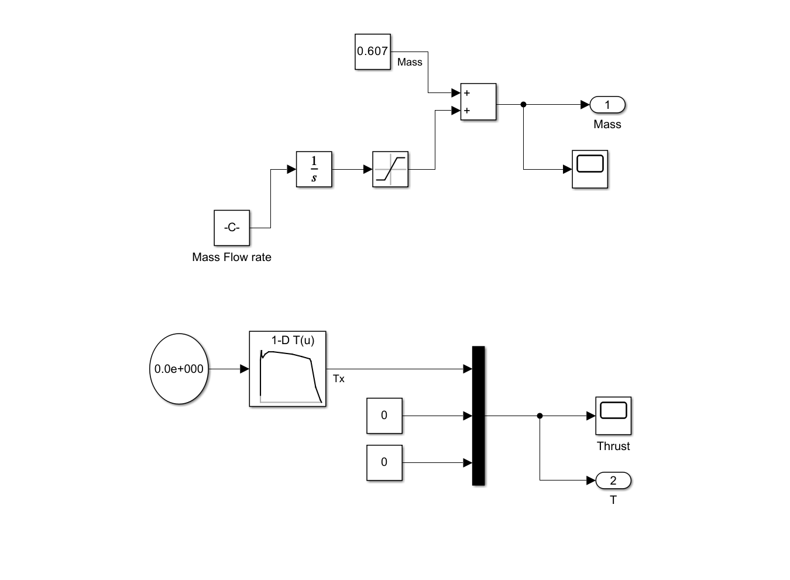
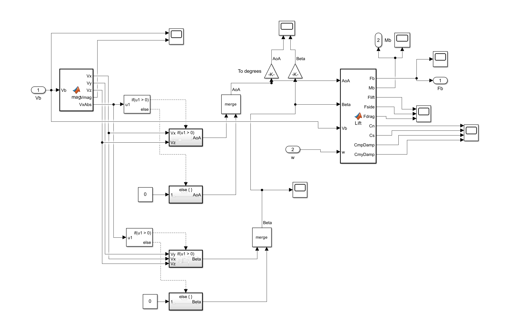
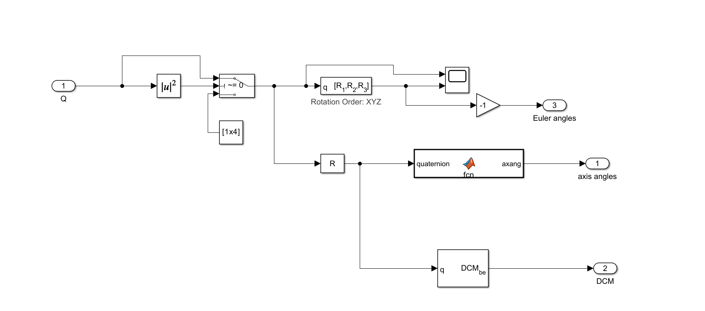
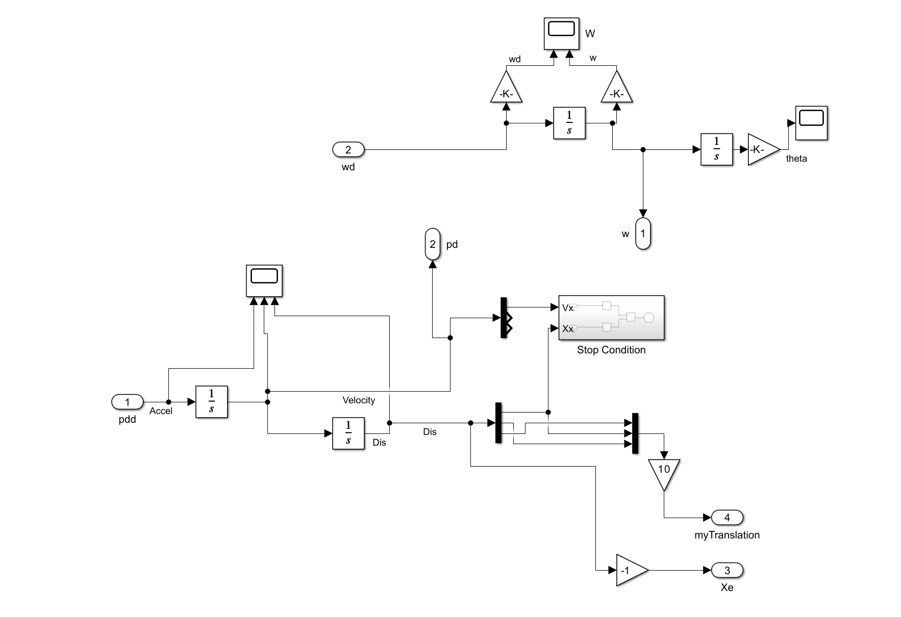

0 · Why 5 DOF?
A 6-DOF model resolves all three rotations (roll φ, pitch θ, yaw ψ) and all three translations. A 5-DOF model drops roll dynamics while keeping roll-coupled mass properties. The assumption is valid for:
- Axis-symmetric launch vehicles whose roll is either uncontrollable or has negligible effect on guidance.
- Concept studies where pitch–yaw motion and translation dominate performance metrics (e.g. altitude, range, attitude for TVC).
The roll moments were neglected as when introduced created a bug, likely to do with some other part of the code, feel free to experiment and let me know if you can solve it!
Why Learn Simulink?
Simulink isn’t just a toy — it’s a core tool used across the aerospace, automotive, and energy industries. From SpaceX to Siemens, Simulink powers control loops, system models, and rapid prototyping. By learning it now, you’re building a skillset that will:
- üíº Impress recruiters ‚Äî simulation and model-based design are key talking points in interviews.
- üéì Accelerate coursework ‚Äî especially at Caledonian where control systems, dynamics, and embedded applications often rely on MATLAB & Simulink.
- üöÄ Empower your own projects ‚Äî from rockets to robotic arms to drones, you‚Äôll be able to model, simulate, and iterate fast.
Some real-world systems modelled in Simulink include:
- Jet engine control loops
- EV drivetrain dynamics and regenerative braking
- Satellite attitude controllers
- Wind-turbine pitch/yaw optimisation
Craig’s Perspective
For me, creating models for rockets allowed the testing and simulation of control systems such as Model Predictive Control. The aerospace industry has consistently fostered incredible innovation throughout history; today's industry continues this trend through the development of rovers and spacecraft. These autonomous machines have been essential in the quest to understand the universe and to obtain intimate knowledge of the planets within the solar system.
The James Webb Space Telescope, for instance, has groundbreakingly observed planets and celestial objects even beyond this solar system with unprecedented detail. At the core of interplanetary space missions—be it for a spacecraft, a rover, or a quadcopter—lie extremely sophisticated control systems. These require balancing diverse constraints while operating in stunningly unique and hostile conditions.
Simulations can be designed to test these systems within the very physics they will face, with many planets and moons presenting difficult conditions to emulate on Earth. As with any engineering challenge, a trade-off arises in control systems: balancing the sufficient computational speed required to respond to real-time disturbances against precise, persistent control inputs. At the field's cutting edge, Thrust Vector Control (TVC) is deployed by SpaceX in Starship’s 39 Raptor engines (including the Super Heavy booster), alongside active aerodynamic surfaces to stabilise and guide the rocket across its flight stages.
üöÄ If you want deeper technical insight into real-world rocket performance ‚Äî from stability margins to motor curves ‚Äî we highly recommend checking out the OpenRocket documentation. It‚Äôs a brilliant, open-source tool with rich modelling features and detailed documentation that informed all of this work.
üìò Furthermore, an academic piece was written on the equations and theory behind the simulation design.
View the Full 6-DOF Tutorial1 · Equation Set
This is the function at the core of the simulation: a quaternion-based, body-frame-aware rigid-body dynamic model for translation and rotation.
function [pdd, wd, qd] = EOM(m, Fxyz, q_in, w1, w2, w3, Mb)
q_in = q_in / norm(q_in);
Ix=0.00083; Iy=0.00073; Iz=0.00073;
g=9.81;
wx=w1; wy=w2; wz=w3;
w=[w1;w2;w3];
% Newton-Euler rotation
wxd = (1/Ix) * (Mb(1) + (Iy - Iz) * wy * wz);
wyd = (1/Iy) * (Mb(2) + (Iz - Ix) * wx * wz);
wzd = (1/Iz) * (Mb(3) + (Ix - Iy) * wx * wy);
wd =[wxd;wyd;wzd];
% Quaternion rate
qd = 0.5*hamilton(q_in,[0;wx;wy;wz]);
% Rotate net force into inertial frame
Fi_quat = hamilton(hamilton(q_in,[0;Fxyz]), conjugate(q_in));
Fi = Fi_quat(2:4);
% Translational accelerations
xdd = (Fi(1) / m) - g;
ydd = Fi(2) / m;
zdd = Fi(3) / m;
pdd = [xdd; ydd; zdd];
function product = hamilton(q, r)
product = [r(1)*q(1) - r(2)*q(2) - r(3)*q(3) - r(4)*q(4);
r(1)*q(2) + r(2)*q(1) + r(3)*q(4) - r(4)*q(3);
r(1)*q(3) - r(2)*q(4) + r(3)*q(1) + r(4)*q(2);
r(1)*q(4) + r(2)*q(3) - r(3)*q(2) + r(4)*q(1)];
end
function q_star = conjugate(q)
q_star = [q(1); -q(2); -q(3); -q(4)];
end
end2 · Block-Diagram Topology
-
Top Level

-
Environment

-
Propulsion & Mass

-
Aerodynamics

-
Attitude Kinematics

-
Integrator and Stop Condition

3 · Step-by-Step Build
Full 5-DOF Block Diagram
Start by dropping a large Matlab Function Block and labelling it EOM (equations-of-motion); this will house the rigid-body ODEs later. Wire the sub-system structure (top-to-bottom) to match the whole system diagram above:
- Rocket subsystem’s Mass and T outputs.
- Environment subsystem’s Vb output (velocity-in-body) and feed the integrated acceleration as Vxyz (inertial frame) into its input along with the current quaternion, qin.
- Aerodynamics subsystem’s Fb and Mb output (body frame force and moments). Feed the angular velocity, w as an input along with body frame velocity, Vb.
- For now, leave the Thrust Vector Control subsystem disconnected.
- A two-way Sum block that collects aerodynamic forces, Fb and thrust, T.
- Feed the EOM's right-hand outputs (acceleration pdd and angular-rate derivative wd) into Integration/StopCondition (translation) and an Integrator feeding the Rotation subsystem. Finally, send position Xe, Euler angles and quaternions to an Animation subsystem for visualisation. Lay out the wires first, then drop the grey-shaded subsystems inside the white canvas exactly as shown.
Environment Subsystem
- Begin with two Wind Speed Sine-Wave blocks.
- Low-pass them using Unit Delay blocks (
z⁻³) for numerical accuracy during early stages of flight. - A Vector Concatenate merges the wind components and a Constant block (zero) into a 3 × 1 vector Vxyz.
- Sum this with the inertial frame velocity using a Sum block marked “+ +” to obtain Vrel (relative wind).
- Pass Vrel and the incoming quaternion q_in into a MATLAB Function titled l_to_b.
function Vb = I_to_b(V_rel_inertial, q_in) q_in = q_in / norm(q_in); % Transform velocity to body frame quaternion using current orientation Vb_quat = hamilton(hamilton(conjugate(q_in), [0; V_rel_inertial]), q_in); Vb = Vb_quat(2:4); % Remove scalar part %calculate conjugate of quaternion function q_star=conjugate(q) q_star=[q(1);-q(2);-q(3);-q(4)]; end end function product = hamilton(q, r) product = [r(1)*q(1) - r(2)*q(2) - r(3)*q(3) - r(4)*q(4); r(1)*q(2) + r(2)*q(1) + r(3)*q(4) - r(4)*q(3); r(1)*q(3) - r(2)*q(4) + r(3)*q(1) + r(4)*q(2); r(1)*q(4) + r(2)*q(3) - r(3)*q(2) + r(4)*q(1)]; end - Rotate the vector into body axes using l_to_b, yielding Vb.
- Probe the key signals with Scope blocks.
- Export Vb through an Outport.
Propulsion & Mass Subsystem
Top branch (mass):
- Place a Constant (-0.06194) for propellant mass-flow rate into an Integrator (1/s). (This depends on fuel velocity
-
From Total Propellant Mass and Burn Time
If you have:
mₚ= total propellant mass (kg)
t_b= total burn time (s)
Then:
ṁ = mₚ / t_b
This gives a constant average mass flow rate, which is a good approximation for most commercial model rocket motors. -
From Thrust and Exhaust Velocity
If you have:
T= thrust (N)
vₑ= effective exhaust velocity (m/s)
Then from the thrust equation:
T = ṁ · vₑ ⇒ ṁ = T / vₑ
ü߆ Note: This assumes no atmospheric pressure contribution (or that it‚Äôs been factored into thrust).
Exhaust velocity can be estimated from:
vₑ = Isp · g₀ - Limit the result with a Saturation so mass never drops below zero.
- Sum it with a Constant 0.607 kg dry-mass using a two-input Sum.
- The summation of these blocks is the current Mass at each time step.
üîπ Two Ways to Estimate Mass Flow Rate (ṃ)
Bottom branch (thrust):
- Set up a 1-D Lookup Table based off any typical thrust-time curve online. This is a small rocket and uses Thrust = [13;82;98;100;90;86;93;96;96;92;88;83;80;30;4;0] and Time = [0.01;0.02;0.03;0.04;0.05;0.06;0.12;0.2;0.3;0.7;0.9;1.07;1.1;1.2;1.3;1.33] which are stored in the base workspace.
- Combine Tx with two Constant 0 blocks in a Mux to form a 3-component thrust vector.
- Output the vector via Outport T. It is critical to note that the thrust is being applied in the body frame x axis, sometimes the z axis is used here.
Aerodynamics Subsystem
- Feed the 3-axis body velocity Vb into a MATLAB Function.
-
The function outputs individual components (Vx, Vy, Vz) plus magnitude:
function [Vx, Vy, Vz, Vmag, VxAbs] = mag(Vb) Vx = Vb(1); Vy = Vb(2); Vz = Vb(3); VxAbs = abs(Vx); Vmag = norm(Vb); end - Use two If blocks to guard against negative Vx/Vy when computing AoA and Beta.
- Each branch contains a Gain and a Merge.
- Convert AoA and Beta from radians to degrees (x180/pi) for intuition.
- Bundle AoA, Beta, Vb and body rates w into the main aerodynamic-coefficients MATLAB Function block
- Deliver Fb and Mb to the calling level through Outports.
- The following MATLAB function computes aerodynamic forces (
Flift,Fside,Fdrag) and moments (Mb). - It uses inputs: angle-of-attack (
AoA), sideslip angle (Beta), body-axis velocity (Vb), and angular-rates (w). - Lift and side-force act perpendicularly, aligned to body frame axes.
- Forces are summed and inverted to match coordinate conventions.
- Bring the quaternion Q in through an Inport.
- Square-and-sum it using a Math Function |u|² block.
- A Compare to Zero block detects if the norm is zero and opens a bypass path to avoid NaNs.
- The validated quaternion is passed into a MATLAB Function block titled q [R₁,R₂,R₃] (Rotation Order XYZ) which outputs Euler angles.
- Insert a small Gain −1 to flip the sign convention before sending to the Outport Euler angles (feeding the 6dof simulation block which works best option for quick simulation results).
- In parallel, feed Q into another MATLAB Function block that converts quaternion → axis-angle, outputting via axis angles Outport.
- Also send Q into a Quaternion to DCM block and export the Direction Cosine Matrix through Outport DCM_be.
- Integrate angular-rate derivative wd using an Integrator to get body-rates w.
- Pass w into a second Integrator to accumulate Euler angle theta.
- Attach Scope blocks to both integrators to visualise w and theta.
- Integrate acceleration pdd once to obtain Velocity.
- Integrate Velocity again to obtain Dis (displacement).
- Route Vx and Xx into a nested Stop Condition subsystem.
- Use two Relational Operator blocks to check the thresholds: “< −3 m/s” and “≤ −1.5 m”.
- The results feed into an AND block that triggers a Stop Simulation block.
- Multiplex the position components using a Mux block.
- Apply a Gain 10 to scale the position signal for the visualiser (producing myTranslation. (I never got this working well).
- If your inertial frame requires it, flip the sign of Xe using a simple Gain −1.
Lift, Side-Force & Drag Function
function [Fb, Mb, Flift, Fside, Fdrag, Cn, Cs, CmpDamp, CmyDamp] = Lift(AoA, Beta, Vb, w)
% LIFT calculates aerodynamic forces and moments based on AoA, sideslip,
% body-frame velocity, and angular rates. Used in Aero block of 6DOF rocket sim.
% Geometry and constants
Ab = 0.003504635; % Reference area (body cross-section)
Afin = 0.00965; % Fin area
Aplanform = 0.0835; % Total lifting planform area
l = 0.202; % Lever arm from CoG to CoP
Mroll = 0; % Roll moment (not modeled here)
rho = 1.225; % Air density
Cdx = 0.65; % Base drag coefficient
d = 0.068; % Reference length (rocket diameter)
Vbx = Vb(1); Vby = Vb(2); Vbz = Vb(3); % Velocity components
wy = w(2); wz = w(3); % Angular rates (pitch & yaw)
span = 0.1; % Fin span
midchord = (90 - 85.134)*pi/180; % Mid-chord sweep angle (rad)
K = 1.1; % Empirical lift correction factor
% Flow properties
AoAThreshold = 5*pi/180; % Linear vs nonlinear lift region (5 deg)
Vmag = norm(Vb); % Total airspeed
q = 0.5 * rho * Vmag^2; % Dynamic pressure
M = Vmag / 340; % Mach number
r = d / 2; % Body radius
if M > 1, M = 0.99; end % Avoid sqrt(1-M^2) becoming complex
% Compressibility-adjusted aspect ratio factor (used in lift curve slope)
rho = span^2 * sqrt(1 - M^2) / (Afin * cos(midchord));
%% --- AoA-dependent Lift Coefficient (Cn) ---
if abs(AoA) < AoAThreshold
% Linear region: only nose and fin effects
CnNose = 2*sin(AoA)/Ab * pi*0.229^2;
Cnfins = 3*(2*pi*span^2/Ab)/(1 + sqrt(1 + rho^2));
CnAoA = CnNose + Cnfins;
Cn = CnAoA * -sin(AoA); % Negated for coordinate convention
else
% Nonlinear region: includes body lift ~ sin^2(AoA)
CnNose = 2*sin(AoA)/Ab * pi*0.229^2;
Cnfins = 3*(2*pi*span^2/Ab)/(1 + sqrt(1 + rho^2));
CnBodyLift = K * Aplanform / Ab * sin(AoA)^2; % Nonlinear lift
CnAoA = CnNose + Cnfins + CnBodyLift;
Cn = CnAoA * -sin(AoA); % Overall normal force coefficient
end
%% --- Beta-dependent Side Force Coefficient (Cs) ---
if abs(Beta) < AoAThreshold
% Linear sideslip region
CsNose = 2*sin(Beta)/Ab * pi*0.229^2;
Csfins = 3*(2*pi*span^2/Ab)/(1 + sqrt(1 + rho^2));
CsBeta = CsNose + Csfins;
Cs = CsBeta * sin(Beta);
else
% Nonlinear sideslip response: adds body lift effect
CsNose = 2*sin(Beta)/Ab * pi*0.229^2;
Csfins = 3*(2*pi*span^2/Ab)/(1 + sqrt(1 + rho^2));
CsBodyLift = K * Aplanform / Ab * sin(Beta)^2;
CsBeta = CsNose + Csfins + CsBodyLift;
Cs = CsBeta * sin(Beta);
end
%% --- Pitch and Yaw Moment Coefficients ---
Cmp = (Cn * l) / d; % Pitch moment from Cn
Cmy = (Cs * l) / d; % Yaw moment from Cs
% Angular rate damping (dynamic stability): increases with rate^2
CmpDamp = -(1.25^4 * r * -wy^2) / (Ab * d * Vmag^2); % pitch rate damping
CmyDamp = (1.25^4 * r * -wz^2) / (Ab * d * Vmag^2); % yaw rate damping
% Combine static and damping moments
Cmp = Cmp + CmpDamp;
Cmy = Cmy + CmyDamp;
%% --- Aerodynamic Forces ---
if Vmag > 1e-3
% Drag force based on total velocity direction
Fdragmagx = q * Ab * Cdx;
Fdragx = Fdragmagx * (Vbx / Vmag * sign(Vbx)); % x-component
Fdragyz = Fdragmagx * ([Vby * sign(Vby); Vbz * sign(Vbz)] / Vmag); % y/z
Fdrag = [Fdragx; Fdragyz]; % Total drag vector (body frame)
Flift = q * Ab * Cn; % Lift from AoA
Fside = q * Ab * Cs; % Side force from Beta
Mpitch = q * Ab * d * Cmp; % Pitching moment
Myaw = q * Ab * d * Cmy; % Yawing moment
else
% Near-zero speed: no aerodynamic force
Fdrag = [0;0;0]; Flift = 0; Fside = 0; Mpitch = 0; Myaw = 0;
end
%% --- Outputs ---
% Combine lift, side-force, and drag in body frame
Fb = [0; -Fside; Flift] - Fdrag; % Net aerodynamic force (body frame)
Mb = [Mroll; -Mpitch; -Myaw]; % Net aerodynamic moment
end
Attitude Kinematics Subsystem
Integration / Stop-Condition Subsystem
Top path (attitude):
Bottom path (translation):
Download the Full Simulink Model
Get the complete 5-DOF rocket simulation system - ready to run in Simulink.
⬇ Download .SLX File